Química Orgánica
Especializada para alumnos de Medicina
Capítulo 12: Aminoácidos y Proteínas
Especializada para alumnos de Medicina
Capítulo 12: Aminoácidos y Proteínas
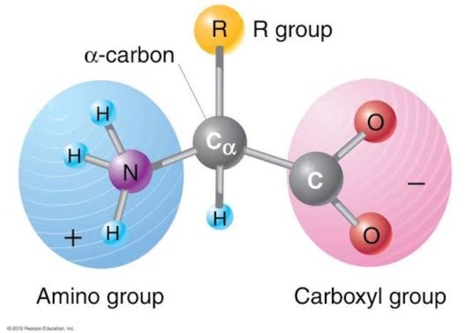
El carbono α es quiral (excepto en la glicina) y presenta isómeros L y D.
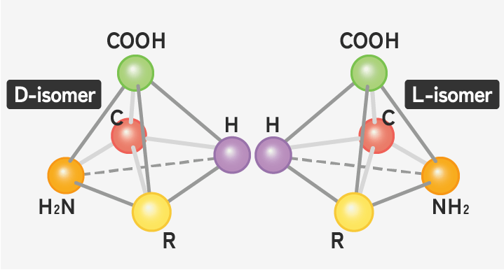
En la mayoría de los seres vivos, solo los L-aminoácidos forman parte de las proteínas.
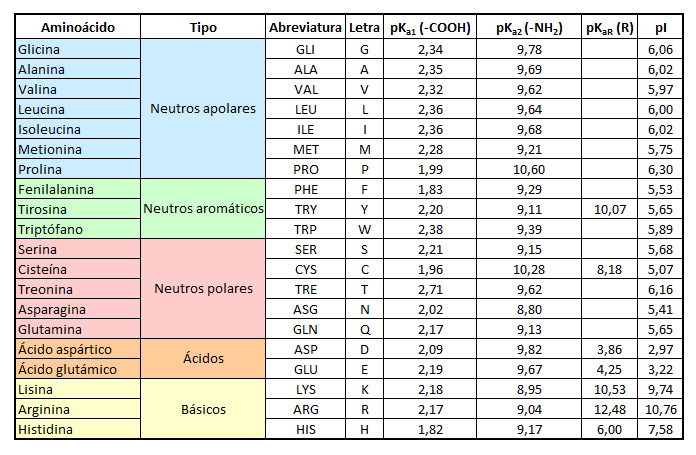
Clasificación basada en la polaridad y carga de la cadena lateral a pH fisiológico.
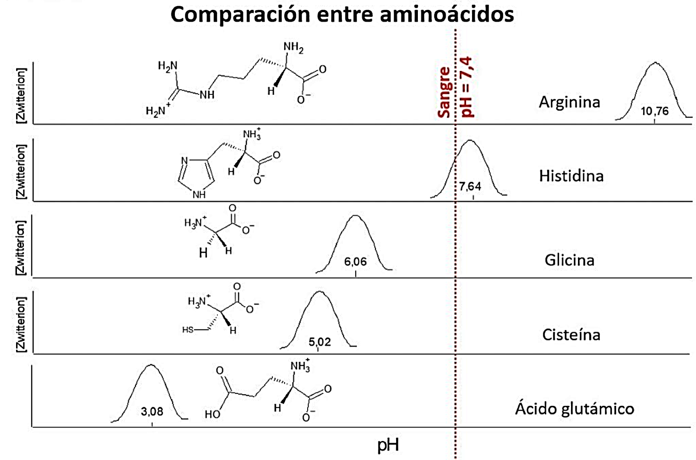
En pH neutro, predomina la forma dipolar o Zwitterión (grupo amino protonado y carboxilo desprotonado).
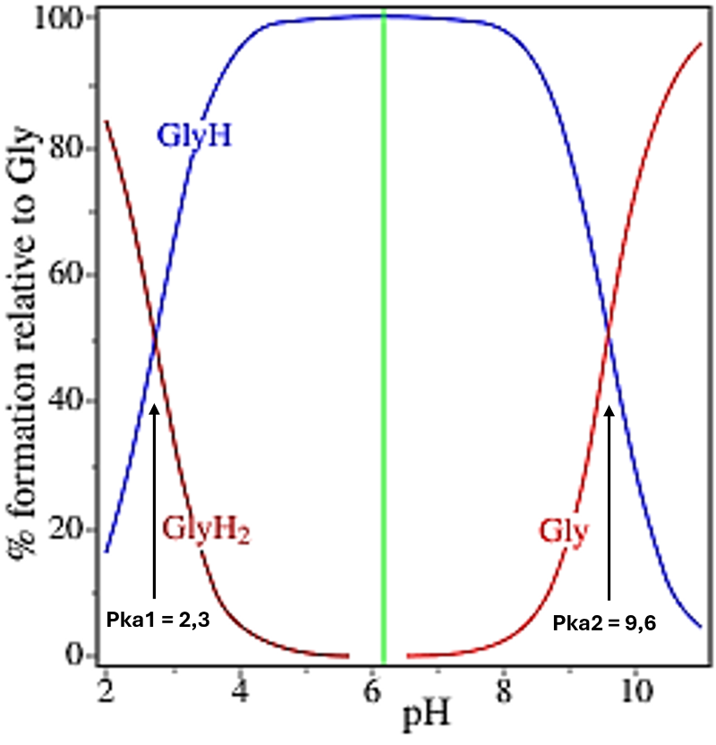
El pI se encuentra en el punto medio entre los dos pKa que flanquean la especie zwitteriónica.
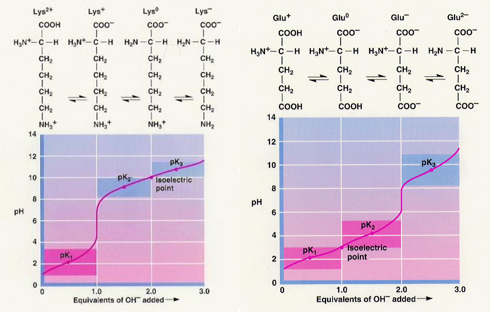
Para la lisina (básica) se promedian los dos pKa más altos; para el ácido glutámico (ácido), los dos más bajos.
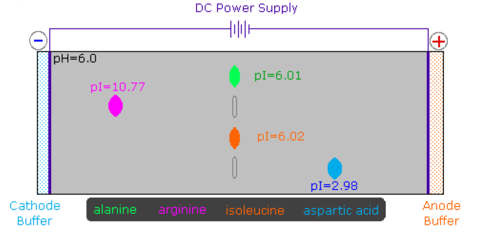
A pH 6: Lisina (catiónica) va al cátodo, Aspártico (aniónico) al ánodo, Alanina (pI≈6) no se mueve.
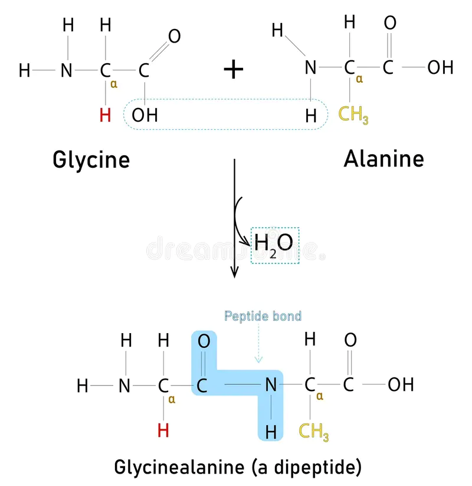
Reacción de formación del enlace peptídico entre el C-carboxilo de uno y el N-amino del siguiente.
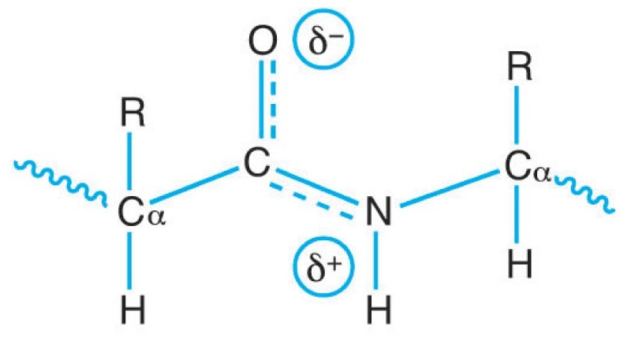
El enlace peptídico es fuerte, plano y generalmente en configuración trans.
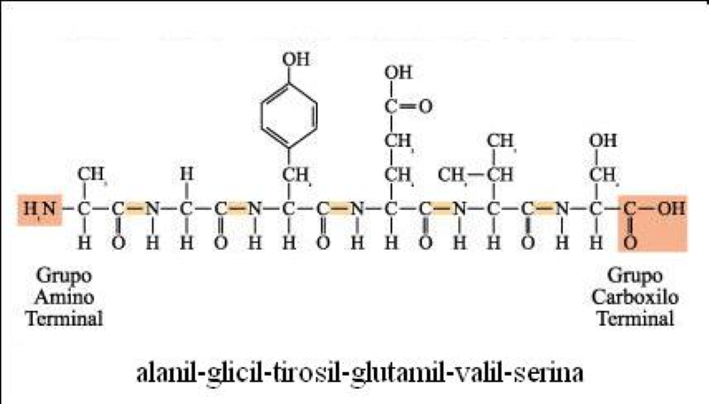
Representación completa, con abreviaturas de 3 letras y con símbolos de 1 letra.
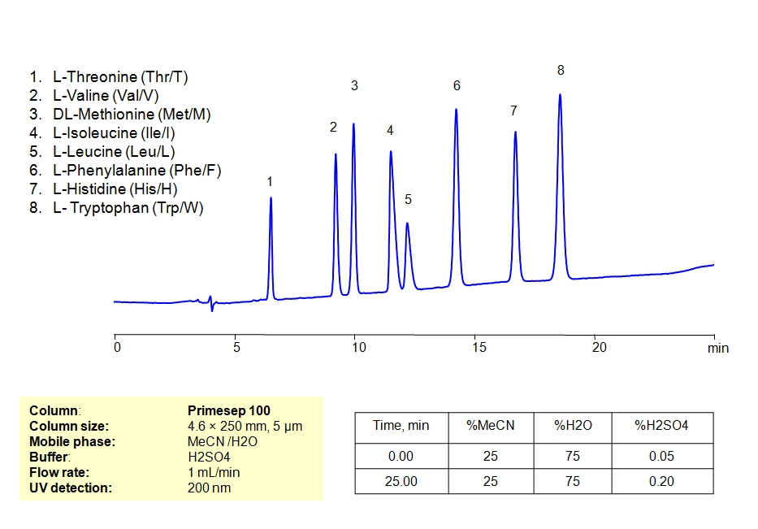
Los picos mas grandes denotan mayor cantidad que los picos mas bajos.
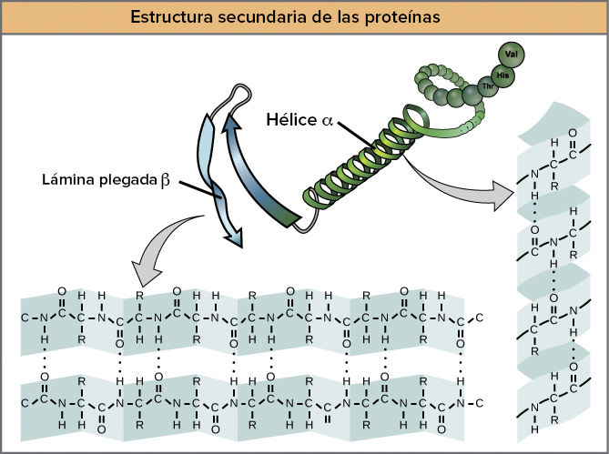
La α-hélice es compacta; la β-laminar forma láminas bidimensionales extendidas.
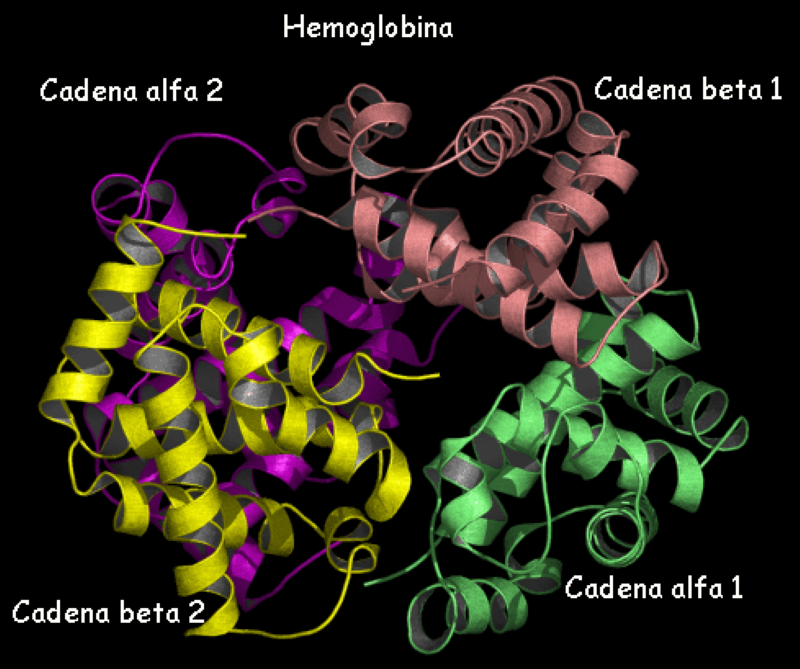
Las subunidades α y β se empaquetan juntas, con los grupos hemo relativamente alejados.
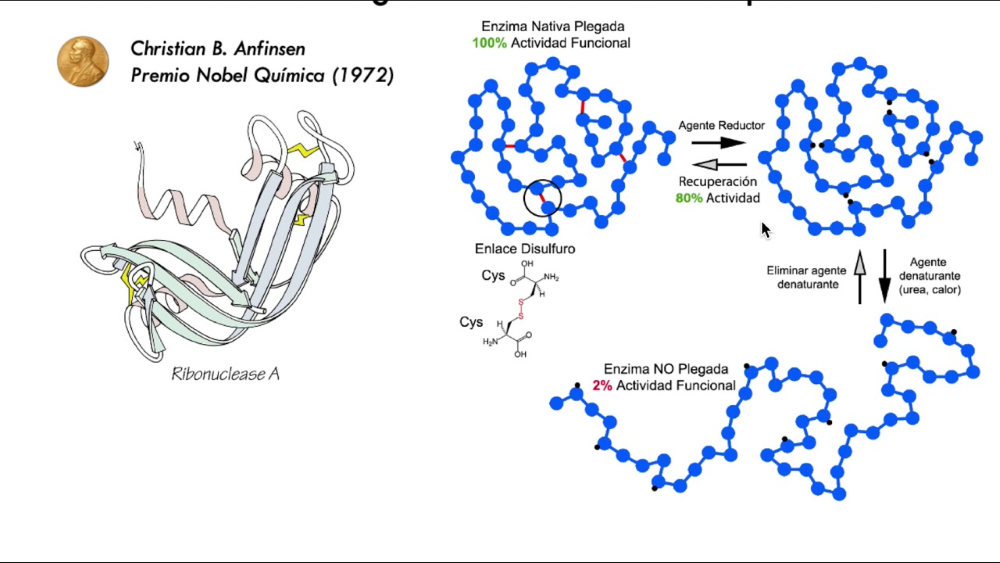
La urea desnaturaliza y el mercaptoetanol rompe los disulfuros. Al eliminarlos, la proteína se renaturaliza y recupera su actividad, demostrando que la estructura primaria determina la terciaria.
Haz clic en cada nodo para desplegar u ocultar sus ramas.
Haz clic en la tarjeta para voltearla y ver la respuesta. Luego califícate con honestidad.
Una mutación puntual cambia un ácido glutámico por valina en la posición 6 de la cadena β de la hemoglobina. Este cambio de un aminoácido polar a uno hidrofóbico provoca la agregación de las moléculas de hemoglobina, deformando el eritrocito en forma de hoz, lo que causa oclusión vascular e isquemia.
El calor excesivo desnaturaliza las proteínas, rompiendo las interacciones no covalentes (puentes de H, fuerzas hidrofóbicas) que mantienen las estructuras 2°, 3° y 4°. Las enzimas pierden su sitio activo y su función catalítica, provocando un fallo metabólico generalizado.
La insulina está formada por dos cadenas (A de 21 aa y B de 30 aa) unidas por puentes disulfuro. Estos enlaces covalentes estabilizan la estructura terciaria/cuaternaria necesaria para que la hormona se una correctamente a su receptor. Si se rompen (reducción), la insulina pierde su actividad biológica.
Al desnaturalizar la ribonucleasa con urea y mercaptoetanol (rompiendo disulfuros), y luego eliminar estos agentes, la proteína se renaturalizó espontáneamente y recuperó su actividad. Esto demostró que toda la información necesaria para el plegamiento tridimensional correcto está contenida en su estructura primaria (secuencia de aminoácidos).
Todos los aminoácidos que forman las proteínas humanas tienen configuración L (NH₂ a la izquierda en Fischer). Los D-aminoácidos son raros (paredes bacterianas, algunos antibióticos).
A pH neutro, el aminoácido es un ión dipolar: -NH₃⁺ (protonado) y -COO⁻ (desprotonado). Carga neta = 0.
El pI siempre es el promedio de los dos pKa que flanquean la especie de carga neta cero. Para aa neutros: (pKa₁+pKa₂)/2. Para ácidos: (pKa₁+pKa_R)/2. Para básicos: (pKa₂+pKa_R)/2.
Cisteína = aminoácido con grupo -SH. Cistina = dímero de dos cisteínas unidas por un puente disulfuro (-S-S-).
Niveles estructurales: 1° (covalente), 2° (puentes H del esqueleto), 3° (interacciones de cadenas R), 4° (asociación de protómeros).
La desnaturalización no rompe los enlaces peptídicos. La estructura primaria (secuencia) se conserva intacta.
Haz clic en cada término para ver su definición:
Error: pensar que las proteínas humanas contienen D-aminoácidos.
Error: considerar a la Gly como centro quiral.
Error: usar ambos términos indistintamente.
Error: usar siempre (pKa₁+pKa₂)/2 sin considerar el grupo R.
Error: pensar que al desnaturalizar una proteína se rompe la secuencia.
Cada ciclo muestra 10 preguntas al azar de una base de 30. Cada vez que entras a esta pestaña o terminas un ciclo se sortean preguntas nuevas.